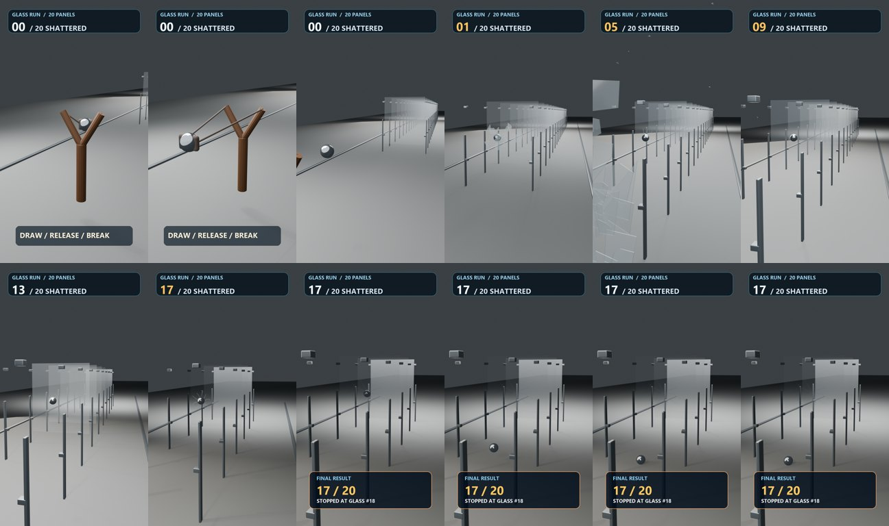

유리판 20장 관통 — V3 / V4
동일한 8초, 720×1280, 24fps. V4는 쇠구슬을 당기는 장면부터 시작하고, 자연광 느낌의 재질 및 실제 녹음 효과음을 적용한 개선 시안입니다. 실사 촬영물이나 정밀 물리 검증 영상은 아닙니다.
두 영상을 준비하고 있습니다.
V3 · 이전 버전
고정된 새총 구간 · 합성음 · 푸른 실험실
V4 · 이번 개선 시안
구슬을 당긴 뒤 발사 · 실제 녹음된 충돌음 · 중립 조명
V4 장면 흐름
